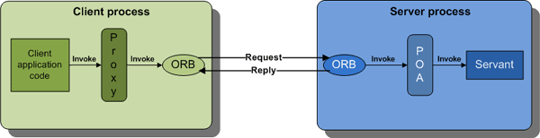
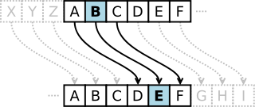
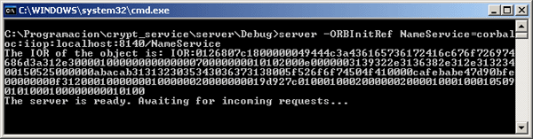
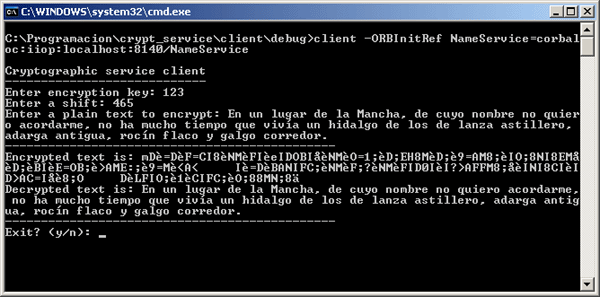

The Object Management Group is a not-for-profit organization that promotes the use of object-oriented technologies. Among other things, it defines the UML and CORBA standards.
CORBA is an acronym for Common ORB Architecture. The phrase common architecture means a technical standard, so CORBA is simply a technical standard for something called an ORB.
In turn, ORB is an acronym for object request broker, which is an object-oriented version of an older technology called remote procedure call (RPC). An ORB or RPC is a mechanism for invoking operations on an object (or calling a procedure) in a different (“remote”) process that may be running on the same, or a different, computer. At a programming level, these “remote” calls look similar to “local” calls. In fact, CORBA makes it possible for a client application written in one programming language, say, Java, to make a remote call to a server implemented in a different programming language, say, C++. This language independence arises because the public interfaces of a server application are defined in an IDL file and CORBA defines mappings from IDL to many programming languages, including C, C++, Java, COBOL, Ada, SmallTalk and Python.
An IDL file defines the public application programming interface
(API) that is exposed by objects in a server application. The
type of a CORBA object is called an interface, which is
similar in concept to a C++ class or a Java interface. An
example IDL file is shown below.
module Finance {
typedef sequence<string> StringSeq;
struct AccountDetails {
string name;
StringSeq address;
long account_number;
double current_balance;
};
exception insufficientFunds { };
interface Account {
void deposit(in double amount);
void withdraw(in double amount) raises(insufficientFunds);
readonly attribute AccountDetails details;
};
};
As the above example shows, IDL types may be grouped into a
module. This construct serves purpose similar to a C++
namespace or a Java package: it places a prefix on the
names of types to prevent namespace pollution. The scoping operator in
IDL is “::”. For example, Finance::Account is the
fully-scoped name of the Account type defined in the
Finance module.
An IDL interface may contain operations and attributes (and, if
you want, also nested types). Many people mistakingly assume that an
attribute is similar in concept to an instance variable in
C++ (a field in Java). This is wrong. An attribute is
simply syntactic sugar for a pair of get- and set-style operations. An
attribute can be readonly, in which case it maps to just a
get-style operation.
The parameters of an operation have a specified direction, which can be
in (meaning that the parameter is passed from the client to the
server), out (the parameter is passed from the server back to the
client) or inout (the parameter is passed in both
directions). Operations can also have a return value. An operation can
raise (throw) an exception if something goes wrong. There are
over 30 predefined exception types, called system exceptions,
that all operations can throw, although in practice system exceptions
are raised by the CORBA runtime system much more frequently than by
application code. In addition to the pre-defined system exceptions, new
exception types can be defined in an IDL file. These are called
user-defined exceptions. A raises clause on the signature
of an operation specifies the user-defined exceptions that it might
throw.
Parameters to an operation (and the return value) can be one of the
built-in types—for example, string, boolean or
long—or a “user-defined” type that is declared in an IDL
file. User-defined types can be any of the following:
struct. This is similar to a C/C++ struct or a
Java class that contains only public fields.sequence. This is a collection type. It is like a
one-dimensional array that can grow or shrink. The IDL-to-C++
mapping predates the C++ standard template library so,
unfortunately, an IDL sequence does not map to a
std::vector. Instead, the IDL-to-C++ mapping defines its
own vector-like data type.sequence type is more flexible and so is more
commonly used.typedef. This defines a new name for an existing type.
For example, the statement below defines age that is
represented as a short:
typedef short age;A common, and very important, use of
typedef is to
associate a name with a sequence or array declaration. For
example:
typedef sequence<string> StringSeq;
union. This type can hold one of several values at
runtime, for example:
union Foo switch(short) {
case 1: boolean boolVal;
case 2: long longVal;
case 3: string stringVal;
};
An instance of Foo could hold a boolean, a
long or a string. The case label indicates which
value is currently active.enum is conceptually similar to a collection of
constant integer declarations. For example:
enum color {red, green, blue};
Internally, CORBA uses integer values to represent different
enum values.
As already mentioned, IDL is used to define the public API that is exposed by objects in a server application. IDL defines this API in a way that is independent of any particular programming language. However, for CORBA to be useful, there must be a mapping from IDL to a particular programming language. For example, the IDL-to-C++ mapping enables people to develop CORBA applications in C++, while the IDL-to-Java mapping enables people to develop CORBA applications in Java.
The CORBA standard currently defines mappings from IDL to the following programming languages: C, C++, Java, Ada, Smalltalk, COBOL, PL/I, LISP, Python and IDLScript. These officially-endorsed language mappings provide source-code portability of applications across different CORBA products. There are unofficial mappings for a few other languages, such as Eiffel, Tcl and Perl.
An IDL compiler translates IDL definitions (for example, struct,
union, sequence and so on) into similar definitions in a
programming language, such as C++, Java, Ada or Cobol. In addition, for
each IDL interface, the IDL compiler generates both stub
code—also called proxy types—and skeleton code. These
terms often cause confusion, so I explain them below:
A CORBA product must provide an IDL compiler, but the CORBA specification does not state what is the name of the compiler or what command-line options it accepts. These details vary from one CORBA product to another.
CORBA uses the term servant to refer to an object written in a programming language (for example, C++ or Java) that implements an IDL interface. The diagram below shows what happens when a client application invokes an operation on an object/servant in a server process.

The application code in the client makes a invocation upon a local proxy object (recall that the proxy class is generated by the IDL compiler). The proxy marshals information about the request—such as the name of the operation being invoked, and its in and inout parameters—into a binary buffer. The proxy object then passes this binary buffer to the ORB library (provided with the CORBA product), which transmits the request message across the network to the server process. The ORB in the client process waits to read a reply message from the server process. The ORB returns the reply buffer back to the proxy object, which unmarshals inout and out parameters and the return value (or a raised exception), and returns these to the client application code.
On the server side, a thread inside the ORB sits in an event loop, waiting for incoming requests. When a request arrives, the ORB reads the request’s binary buffer and passes this to some code that unmarshals the parameters and dispatches the request to the target servant. The code that performs the unmarshalling and dispatching is spread over two components. One component is called a POA, and I will discuss that later in this article. The other component is the skeleton code that was generated by the IDL compiler. The generated skeleton code is not explicitly shown in the diagram because it takes the form of is a base class that is inherited by the servant class. When the operation in the servant returns, the skeleton code marshals the inout and out parameters (or a raised exception) into a binary buffer and this is returned via the POA to the server-side ORB, which transmits the reply message across the network to the client process.
Many programming languages are equipped with a standardized library of functions and/or classes that complement the core language. These standardized libraries usually provide collection data-types (for example, linked lists, sets, hash tables and so on), file input-output and other functionality that is useful for the development of a wide variety of applications. If you asked a developer to write an application in, say, Java, C or C++ but without making use of that language’s standard library then the developer would find it very difficult.
A similar situation exists for CORBA. The core part of CORBA (an object-oriented RPC mechanism built with IDL and common on-the-wire protocols) is of limited use by itself—in the same way that a programming language stripped of its standardized library is of limited use. What greatly enhances the power of CORBA is a standardized collection of services—called CORBA Services—that provide functionality useful for the development of a wide variety of distributed applications. The CORBA Services have APIs that are defined in IDL. In effect, you can think of the CORBA Services as being like a standardized class library. However, one point to note is that most CORBA Services are provided as prebuilt server applications rather than as libraries that are linked into your own application. Because of this, the CORBA Services are really a distributed, standardized class library.
Some of the commonly-used CORBA Services include the following.
I have used the Orbacus implementation of COBRA to develop a sample client-server application. Orbacus is available for both Java and C++.
My demonstration server application provides encrypt() and
decrypt() operations. The client application invokes
encrypt() on an object in the server to encrypt some plain text.
Later the client invokes decrypt() to decrypt the text again.
The encryption/decryption algorithm is based on the Caesar cipher which is one of the simplest encryption techniques. It is a substitution cipher in which each letter in the plain text is replaced by a letter that is a fixed number of positions down the alphabet. I added an XOR operation with an encryption key after the shift operation to obscure the relationship. You can see the substitution technique in the diagram below:

The first step in implementing the client-server application is to write
an IDL file that defines the public API of the server. This consists of
one interface that provides encrypt() and decrypt()
operations. The interface also contains a shutdown() operation so
we can gracefully ask the server to terminate.
The IDL for the demonstration application is shown below.
// Crypt.idl
interface CaesarAlgorithm {
typedef sequence<char> charsequence;
charsequence encrypt(in string info,in unsigned long k,in unsigned long shift);
string decrypt(in charsequence info,in unsigned long k,in unsigned long shift);
boolean shutdown();
};
After writing the IDL file, we convert the IDL definitions into corresponding C++ definitions by running the IDL compiler suplied with Orbacus.
idl crypt.idl
Running that command generates the following files.
crypt.h and crypt.cpp. These files define and
implement the C++ types corresponding to IDL types (such as
structs, unions, sequences and so on) defined in the IDL file.
These files also implement the client-side proxy classes
corresponding to IDL interfaces.crypt_skel.h and crypt_skel.cpp. These files
define and implement the server-side functionality required to
read incoming requests and dispatch them to servants (the
C++ objects that represent the CORBA objects).
Note that the CORBA specification has not standardized the name of the
IDL compiler, and different CORBA implementations may use different
names. For example, the IDL compilers in Orbacus, Orbix and omniORB are
called idl, while TAO calls its IDL compiler tao_idl, and
both VisiBroker and Orbit call theirs idl2cpp.
The next step is to implement the servant class, that is, a C++
class that implements an IDL interface. To do this, we create a class
(CryptographicImpl) that inherits from the skeleton class
(POA_CaesarAlgorithm) generated by the IDL compiler. You can see
this below.
#include <iostream>
#include <string>
#include "OB/CORBA.h"
#include "crypt_skel.h"
class CryptographicImpl : virtual public ::POA_CaesarAlgorithm,
virtual public PortableServer::RefCountServantBase
{
CORBA::ORB_var orb; // Reference to CORBA ORB
public:
CryptographicImpl(CORBA::ORB_var orb)
{
this->orb = orb;
}
// Caesar text encryption algorithm
virtual ::CaesarAlgorithm::charsequence* encrypt(const char* info,::CORBA::ULong k,::CORBA::ULong shift)
throw(::CORBA::SystemException)
{
std::string msg = info;
int len = msg.length();
::CaesarAlgorithm::charsequence* outseq = new ::CaesarAlgorithm::charsequence;
outseq->length(len + 1);
std::string::iterator i = msg.begin();
std::string::iterator end = msg.end();
int j = 0;
while (i != end)
{
*i+= shift;
*i ^= k;
(*outseq)[j++] = *i++;
}
(*outseq)[len] = '\0';
return outseq;
}
// Caesar text decryption algorithm
virtual char* decrypt(const ::CaesarAlgorithm::charsequence& info,::CORBA::ULong k,::CORBA::ULong shift)
throw(::CORBA::SystemException)
{
char* r = CORBA::string_alloc(info.length());
for (int i = 0;i < info.length() - 1;i++)
{
r[i] = info[i];
r[i] ^= k;
r[i] -= shift;
}
r[info.length() - 1] = '\0';
return r;
}
// Terminate CORBA message
virtual ::CORBA::Boolean shutdown() throw(::CORBA::SystemException)
{
orb->shutdown(false);
return true;
}
};
The servant implements the operations defined in the IDL interface. When
a client makes a remote call, the dispatch code (implemented in the
inherited POA_CaesarAlgorithm class) unmarshals the parameters of
the incoming request and invokes the operation.
Having implemented the servant class, we must now implement the server mainline. This performs some CORBA initialization steps, creates the servant, advertises its object reference in the naming service and then enters an event loop to wait for incoming requests. Before showing the code, there are two more CORBA concepts that I need to explain: POA and POA Manager.
From reading this article so far, you might have the impression that a client invokes operations on remote objects, and those remote objects live in a server process. That is almost correct. In reality, the objects live in a container called a POA (the term stands for Portable Object Adapter, but the origin of the name is not particularly interesting), and the POAs, in turn, live in a server process. The motivation for this is that different POAs can provide different qualities of service (or policies in CORBA terminology). For example, one POA might be single-threaded while another POA might be multi-threaded. The quality of service provided by a POA is applied to the servants within that POA. So by putting some servants in one POA and other servants in another POA, a single server process can host objects with a variety of different qualities of service: some objects might be single-threaded, while others are multi-threaded; some objects might be transient (meaning temporary), while other objects might be persistent (meaning that a client application can continue communicating with the object even if the server processes crashes and is restarted). CORBA provides an API that enables server developers to create multiple POAs, each with a potentially different quality of service. The CORBA runtime system in a server pre-creates a “rootPOA” that is multi-threaded and transient. Since that quality of service is suitable for the needs of our demonstration server, we do not need to explicitly create a POA.
A water tap (or faucet as the Americans call it) is used for turning on and off the flow of water. A POA manager is similar to a water tap except that it controls the flow of incoming requests. When a CORBA server starts, the POA manager associated with the root POA is in a holding state, which means if any requests from clients arrive then they will be queued up. This holding state enables a server process to complete its initialization without having to worry about processing incoming requests. When the server has completed its initialization, it puts its POA manager(s) into the active state, so that incoming requests can be dispatched, via POAs, to servants.
#include <iostream>
#include "OB/CORBA.h"
#include <OB/Cosnaming.h>
#include "crypt.h"
#include "cryptimpl.h"
using namespace std;
int main(int argc, char** argv)
{
// Declare ORB and servant object
CORBA::ORB_var orb;
CryptographicImpl* CrypImpl = NULL;
try {
// Initialize the ORB.
1 orb = CORBA::ORB_init(argc, argv);
// Get a reference to the root POA
2 CORBA::Object_var rootPOAObj = orb->resolve_initial_references("RootPOA");
// Narrow it to the correct type
PortableServer::POA_var rootPOA = PortableServer::POA::_narrow(rootPOAObj.in());
// Create POA policies
CORBA::PolicyList policies;
policies.length(1);
policies[0] =
rootPOA->create_thread_policy(PortableServer::SINGLE_THREAD_MODEL);
// Get the POA manager object
PortableServer::POAManager_var manager = rootPOA->the_POAManager();
3 // Create a new POA with specified policies
PortableServer::POA_var myPOA = rootPOA->create_POA("myPOA", manager, policies);
// Free policies
CORBA::ULong len = policies.length();
for (CORBA::ULong i = 0; i < len; i++)
policies[i]->destroy();
// Get a reference to the Naming Service root_context
4 CORBA::Object_var rootContextObj = orb->resolve_initial_references("NameService");
// Narrow to the correct type
CosNaming::NamingContext_var nc =
CosNaming::NamingContext::_narrow(rootContextObj.in());
// Create a reference to the servant
5 CrypImpl = new CryptographicImpl(orb);
// Activate object
PortableServer::ObjectId_var myObjID = myPOA->activate_object(CrypImpl);
// Get a CORBA reference with the POA through the servant
6 CORBA::Object_var o = myPOA->servant_to_reference(CrypImpl);
// The reference is converted to a character string
CORBA::String_var s = orb->object_to_string(o);
7 cout << "The IOR of the object is: " << s.in() << endl;
CosNaming::Name name;
name.length(1);
name[0].id = (const char *) "CryptographicService";
name[0].kind = (const char *) "";
// Bind the object into the name service
8 nc->rebind(name,o);
// Activate the POA
manager->activate();
cout << "The server is ready. Awaiting for incoming requests..." << endl;
// Start the ORB
9 orb->run();
} catch(const CORBA::Exception& e) {
// Handles CORBA exceptions
cerr << e << endl;
}
// Decrement reference count
if (CrypImpl)
10 CrypImpl->_remove_ref();
// End CORBA
if (!CORBA::is_nil(orb)){
try{
11 orb->destroy();
cout << "Ending CORBA..." << endl;
} catch (const CORBA::Exception& e)
{
cout << "orb->destroy() failed:" << e << endl;
return 1;
}
}
return 0;
}
CryptographicImpl servant object is dynamically created.servant_to_reference() provides us with a object
reference for the servant.rebind() operation is used to register the servant’s
object reference in the naming service.The client application performs some CORBA initialization steps,
retrieves the server’s object reference from the naming service and then
goes into a loop, invoking encrypt() and decrypt() on it.
When the client is finished, it invokes shutdown() to ask the
server to terminate.
#include <iostream>
#include <string>
#include "OB/CORBA.h"
#include "OB/Cosnaming.h"
#include "crypt.h"
using namespace std;
int main(int argc, char** argv)
{
// Declare ORB
CORBA::ORB_var orb;
try {
// Initialize the ORB
1 orb = CORBA::ORB_init(argc, argv);
// Get a reference to the Naming Service
2 CORBA::Object_var rootContextObj = orb->resolve_initial_references("NameService");
CosNaming::NamingContext_var nc =
CosNaming::NamingContext::_narrow(rootContextObj.in());
CosNaming::Name name;
name.length(1);
name[0].id = (const char *) "CryptographicService";
name[0].kind = (const char *) "";
// Invoke the root context to retrieve the object reference
3 CORBA::Object_var managerObj = nc->resolve(name);
// Narrow the previous object to obtain the correct type
::CaesarAlgorithm_var manager =
4 ::CaesarAlgorithm::_narrow(managerObj.in());
string info_in,exit,dummy;
CORBA::String_var info_out;
::CaesarAlgorithm::charsequence_var inseq;
unsigned long key,shift;
try{
do{
cout << "\nCryptographic service client" << endl;
cout << "----------------------------" << endl;
do{ // Get the cryptographic key
if (cin.fail())
{
cin.clear();
cin >> dummy;
}
cout << "Enter encryption key: ";
cin >> key;
} while (cin.fail());
do{ // Get the shift
if (cin.fail())
{
cin.clear();
cin >> dummy;
}
cout << "Enter a shift: ";
cin >> shift;
} while (cin.fail());
// Used for debug pourposes
//key = 9876453;
//shift = 938372;
getline(cin,dummy); // Get the text to encrypt
cout << "Enter a plain text to encrypt: ";
getline(cin,info_in);
// Invoke first remote method
5 inseq = manager->encrypt(info_in.c_str(),key,shift);
cout << "----------------------------------------------" << endl;
cout << "Encrypted text is: " << inseq->get_buffer() << endl;
// Invoke second remote method
6 info_out = manager->decrypt(inseq.in(),key,shift);
cout << "Decrypted text is: " << info_out.in() << endl;
cout << "----------------------------------------------" << endl;
cout << "Exit? (y/n): ";
cin >> exit;
} while (exit!="y");
// Shutdown server message
7 manager->shutdown();
} catch(const std::exception& std_e){
cerr << std_e.what() << endl;
}
}catch(const CORBA::Exception& e) {
// Handles CORBA exceptions
cerr << e << endl;
}
// End CORBA
if (!CORBA::is_nil(orb)){
try{
orb->destroy();
cout << "Ending CORBA..." << endl;
} catch(const CORBA::Exception& e)
{
cout << "orb->destroy failed:" << e << endl;
return 1;
}
}
return 0;
}
resolve() (which means lookup) on the naming
service to retrieve the server’s object reference.narrow() operation is, in essence, a typecast. We
have to narrow() the object reference received from the
naming service into the correct subtype so we can invoke
operations on it.encrypt() operation.decrypt() operation.shutdown() operation.
Once we have implemented the client and the server it’s time to connect
them. Because our demonstration client and server exchange object
references via the naming service, we must ensure that the naming service
(which is called nameserv in Orbacus) is running. We use some
command-line options to tell the naming service the host and port on
which it should listen.
nameserv -OAhost localhost -OAport 8140
After this, we can start the server with a command-line option to tell it how to contact the naming service.
server -ORBInitRef NameService=corbaloc:iiop:localhost:8140/NameService

Finally we can start the client, again with a command-line option to tell it how to contact the naming service.
client -ORBInitRef NameService=corbaloc:iiop:localhost:8140/NameService

CORBA offers several benefits.
First, implementations of CORBA are available for many programming languages (such as C, C++, Java, COBOL, Ada, SmallTalk and Python, Tcl and Perl) and many operating systems (including Windows, UNIX, mainframes and embedded devices). Not all client-server technologies can claim this. For example, Microsoft technologies (COM, DCOM and .NET) have traditionally been available only on Windows. Java RMI works across multiple operating systems, but it can be used only in Java-based applications.
Second, when making a remote call, CORBA marshals parameters into a compact binary format for transmission across the network. This compact format saves on network bandwidth. In addition, the CPU overhead required to marshal parameters into the binary format is also quite low. In contrast, some newer client-server technologies, such as SOAP, marshal parameters into XML format when making remote calls. XML is very verbose so it uses a lot of bandwidth; usually at least ten times more bandwidth than an equivalent CORBA call. In addition, when a SOAP-based server receives a request, it must parse the XML to extract the parameter data. Doing this requires a lot of CPU time. In contrast, parameters can be marshaled in and out of CORBA’s binary message format much more quickly.
Third, CORBA has been around for well over a decade, which means that its technology is quite stable and feature rich.
Of course, CORBA is not perfect. Its main drawback is that the power and flexibility of CORBA comes with a relatively steep learning curve. An open-source library called the CORBA Utilities eases some, but not all, of the learning curve for C++ and Java developers.
You can find a good overview of CORBA concepts in CORBA Explained Simply.
For details of writing CORBA applications in C++, read Advanced CORBA programming with C++ by Michi Henning and Steve Vinoski.
About theory and fundamentals:
Distributed Systems: Concepts and Design
by George Coulouris, Jean Dollimore and Tim Kindberg.
Books and notes from the National University for Distance Education - UNED -
Spain.
I would like to thank Ciaran McHale in Progress Software for his feedback on a draft of this article.